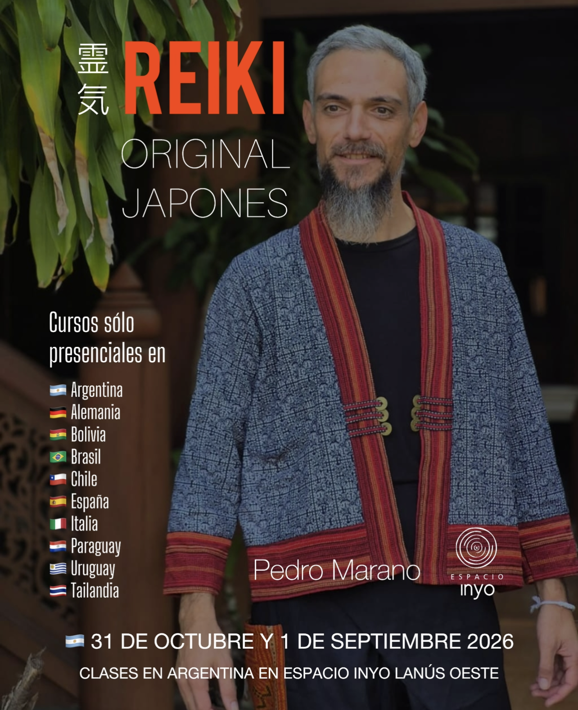

Linaje Gendai Reiki Ho
Seminarios presenciales de meditación y sanación dictados por Pedro Marano. Formación tradicional y auténtica en Lanús.
Sábado 18 y Domingo 19 de Julio, 2026

Primer instructor argentino con grado de "Shihan" (Maestro) recibido en Japón de manos de Hiroshi Doi Sensei. Miembro activo de la Gendai Reiki Network, dedicado a la enseñanza desde el 2005.
Sábado 18 de Julio | 10:00 a 14:00 hs.
A través de Shoden te convertirás en una canal de Reiki puro. Aprenderás a utilizar la energía Reiki para purificar tu sistema nervioso y mente. Incorporarás técnicas de meditación, respiración, visualización, armonización de ambientes, tratamientos personales y para terceros. Conocerás a fondo la historia de Mikao Usui Sensei.
$118.000.-
Reservar Nivel 1Sábado 18 de Julio | 15:30 a 19:30 hs.
Con Okuden se potencia el uso de Reiki. Se aprenden los símbolos, herramientas para enviar energía trascendiendo el tiempo y el espacio (pasado, futuro y distancia). Nuevas técnicas de desprogramación de hábitos nocivos y desintoxicación.
$148.000.-
Reservar Nivel 2Domingo 19 de Julio | 10:00 a 14:00 hs.
Llamado “Maestría Personal”. Se incorpora el último símbolo para aprender a resonar con Reiki en todo momento. Es el nivel más significativo a nivel espiritual, brindando una sensación de completitud y hogar.
$178.000.-
Reservar Nivel 3Reiki es un método que se transmite de Instructor a Alumno. No puede aprenderse a través de libros ni internet.
Gendai Reiki Ho es la disciplina que Sensei Hiroshi Doi, creó combinando las técnicas de Dento Reiki (Reiki Tradicional de la Asociación fundada por Mikao Usui en 1922) con los aportes Occidentales que se realizaron a través de los años. Sensei Doi es el Presidente y Fundador de Gendai Reiki Ho, y además es el único miembro activo de Usui Reiki Ryoho Gakkai que enseña a personas occidentales.
Fortalece el sistema inmunológico, regula la presión arterial y el colesterol. Ayuda en la cicatrización y recuperación de cirugías. Disminuye dolores y reduce efectos negativos de medicamentos. Equilibra el sistema nervioso.
Reduce el estrés y suaviza picos emocionales. Genera equilibrio interior, paz y bienestar. Sanación de viejas heridas afectivas. Estimula la creatividad y aporta claridad mental facilitando la concentración.
Amplía la Conciencia de la Universalidad. Aporta confianza en el proceso de la vida. Aumenta la capacidad de tomar responsabilidad de nuestros actos como creadores de nuestra vida. Ayuda a expandir Amor.
Aprendizaje grupal sin cupo máximo. Se inicia con la parte teórica de encuadre, pero es en general práctico y vivencial. Las técnicas se practican en grupo para tener experiencias de conexión con el método.
Todo lo aprendido está en los manuales oficiales de Hiroshi Doi. Además se entrega el certificado con el aval de la asociación japonesa.
Entrenamiento flexible para Instructores. Se aprende las sintonizaciones de todos los niveles y se recibe la “iniciación integrada” que habilita a enseñar.
Recibe los manuales actualizados, la conexión directa con Japón y el certificado de “Shihan en Gendai Reiki Ho”. Obtendrá el 5to lugar en el linaje sagrado tras Pedro Marano.